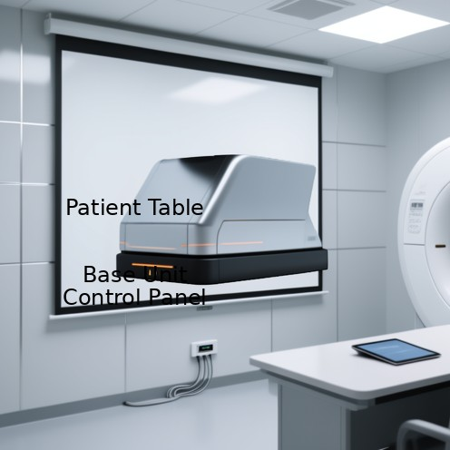
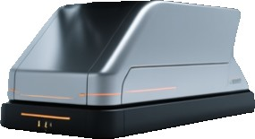
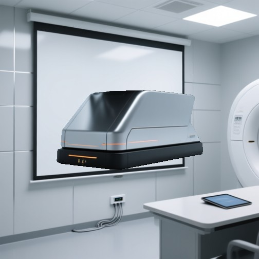
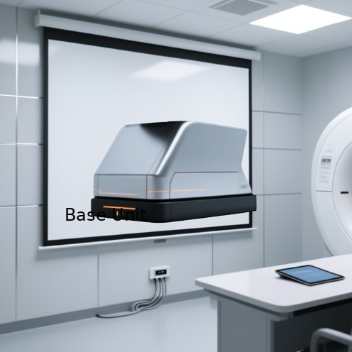
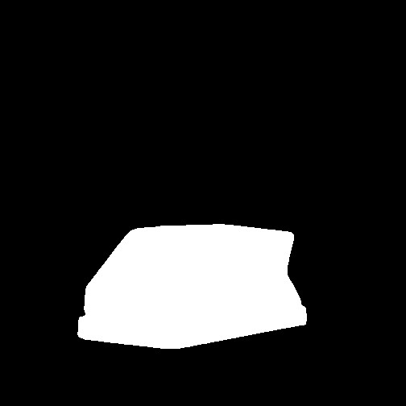
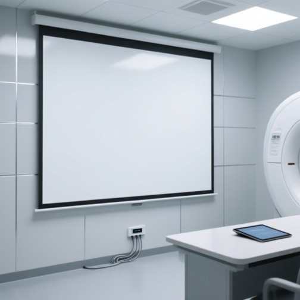

样本10 · 系统B
中文友好版完整轨迹。系统提示和工具 schema 已移除；工具名、坐标和图像 ID 保持原样。
评分建议
请结合任务、完整轨迹、中间图和最终图，分别评价结果一致性与过程合理性。
最终图

全部图片






纯净轨迹
1. User
给定一张医疗扫描仪图片 img_1 和一张教室投影墙图片 img_2。先识别医疗扫描仪图片的下半部分，提取该区域并叠加到教室投影墙上，要求重叠自然、视觉风格干净且技术化。随后检查更新后的投影墙，如果构图对称性被破坏，就调整叠加区域的位置或尺寸以恢复对称。最后在修改后的投影墙上添加英文标签，标明医疗扫描仪的部件，使画面成为一致的分析图。
原始请求
Given an image of a medical scanner [图片1] img_1 and an image of a classroom projection wall, first identify the lower area of the medical scanner image. Then, extract this region and overlay it onto the classroom projection wall, ensuring that the overlap is seamless and the visual style remains [图片2] img_2clean and technical. Next, inspect the updated classroom projection wall image. If the symmetry of the composition is disrupted, adjust the placement or size of the overlaid region to restore symmetry. Finally, add labels in English to the modified classroom projection wall to indicate the parts of the medical scanner, presenting the scene as a consistent analysis graphic.
2. Assistant
中文阅读提示：模型在这一轮说明观察、判断或下一步计划。完整原文见展开项。
assistant 原始说明
I observe two images: img_1 (medical scanner) and img_2 (classroom projection wall). The task requires me to: 1. Identify the lower area of the medical scanner (img_1). 2. Extract this region and overlay it onto the classroom projection wall (img_2) seamlessly. 3. Ensure the visual style remains clean and technical. 4. Check symmetry and adjust if needed. 5. Add English labels to indicate parts of the medical scanner. First, I need to define the "lower area" of the medical scanner. From visual inspection, the lower area includes the base, the patient table, and the lower part of the scanner's structure. I will use Grounding to locate this region precisely.
工具调用：Grounding（定位目标对象/区域）: 输入图像: img_1；定位描述: lower area of the medical scanner including the base and patient table
原始 JSON 参数
{
"name": "Grounding",
"arguments": {
"image": "img_1",
"reference_text": "lower area of the medical scanner including the base and patient table"
}
}3. Tool
定位结果： - lower area: [187, 547, 762, 864]，置信度 0.39
原始 tool 返回
Found 1 objects: - 'lower area': [187, 547, 762, 864] (confidence: 0.39) [now imglist is {img_1, img_2}]4. Assistant
中文阅读提示：模型在这一轮说明观察、判断或下一步计划。完整原文见展开项。
assistant 原始说明
I have successfully grounded the lower area of the medical scanner in img_1 with the bounding box [187, 547, 762, 864]. Next, I will use SAM to generate a precise mask for this region, then extract it using the Extract tool.
工具调用：SAM（根据框生成分割掩码）: 输入图像: img_1；区域框: [187, 547, 762, 864]
原始 JSON 参数
{
"name": "SAM",
"arguments": {
"image": "img_1",
"bbox": "[187, 547, 762, 864]"
}
}5. Tool
SAM 分割完成。[图片1] Segmentation completed successfully. - Mask shape: [504, 504] - Confidence score: 0.9849 - Mask area: 35021 pixels (13.79% of image) - Bounding box: [94.248, 275.688, 384.048, 435.456] [Output image saved as: SAM_0. now imglist is {img_1, img_2, SAM_0}]原始 tool 返回
[图片1] Segmentation completed successfully. - Mask shape: [504, 504] - Confidence score: 0.9849 - Mask area: 35021 pixels (13.79% of image) - Bounding box: [94.248, 275.688, 384.048, 435.456] [Output image saved as: SAM_0. now imglist is {img_1, img_2, SAM_0}]6. Assistant
中文阅读提示：模型在这一轮说明观察、判断或下一步计划。完整原文见展开项。
assistant 原始说明
I have successfully generated a segmentation mask (SAM_0) for the lower area of the medical scanner. Now, I will extract this region using the Extract tool to obtain a transparent-background image of the lower part of the scanner.
工具调用：Extract（用掩码提取对象/区域）: 输入图像: img_1；掩码: SAM_0
原始 JSON 参数
{
"name": "Extract",
"arguments": {
"image": "img_1",
"mask": "SAM_0"
}
}7. Tool
对象/区域提取完成。[图片1] Extracted object from image using mask. Cropped from bbox: [96,278,381,433], Output size: (285, 155) [Output image saved as: Extract_0. now imglist is {img_1, img_2, SAM_0, Extract_0}]原始 tool 返回
[图片1] Extracted object from image using mask. Cropped from bbox: [96,278,381,433], Output size: (285, 155) [Output image saved as: Extract_0. now imglist is {img_1, img_2, SAM_0, Extract_0}]8. Assistant
中文阅读提示：模型在这一轮说明观察、判断或下一步计划。完整原文见展开项。
assistant 原始说明
I have successfully extracted the lower area of the medical scanner as a transparent-background image (Extract_0). Now, I will overlay this extracted region onto the classroom projection wall (img_2). To ensure a seamless and clean technical appearance, I will place it centrally on the projection wall, aligning it with the center of the screen.
工具调用：Overlayer（把对象或文字叠加到背景图）: 背景图: img_2；叠加内容: Extract_0；位置: [500, 500]
原始 JSON 参数
{
"name": "Overlayer",
"arguments": {
"base_image": "img_2",
"overlay_type": "object",
"content": "Extract_0",
"position": "[500, 500]"
}
}9. Tool
叠加完成。[图片1] Overlaid object onto image at position [500.0,500.0]. Output size: (504, 504) [Output image saved as: Overlayer_0. now imglist is {img_1, img_2, SAM_0, Extract_0, Overlayer_0}]原始 tool 返回
[图片1] Overlaid object onto image at position [500.0,500.0]. Output size: (504, 504) [Output image saved as: Overlayer_0. now imglist is {img_1, img_2, SAM_0, Extract_0, Overlayer_0}]10. Assistant
中文阅读提示：模型在这一轮说明观察、判断或下一步计划。完整原文见展开项。
assistant 原始说明
I have successfully overlaid the extracted lower part of the medical scanner onto the classroom projection wall (Overlayer_0). The placement is centered, and the visual style appears clean and technical as required. Next, I need to inspect the composition for symmetry. The current placement is centered, but the object is slightly tilted and may disrupt the symmetry due to its 3D perspective. To restore symmetry, I will adjust the size and position slightly to ensure it aligns perfectly with the projection screen's center and maintains a balanced composition. I will now use ImageEdit to adjust the size and position of the overlaid object for better symmetry.
工具调用：ImageEdit（执行图像语义编辑或局部修正）: 输入图像: Overlayer_0；编辑要求见原始参数
原始 JSON 参数
{
"name": "ImageEdit",
"arguments": {
"image": "Overlayer_0",
"edit_prompt": "adjust the size and position of the overlaid medical scanner base to be perfectly centered on the projection screen and aligned with the screen's edges for a symmetrical composition"
}
}11. Tool
图像编辑完成。[图片1] Edited image with instruction: adjust the size and position of the overlaid medical scanner base to be perfectly centered on the projection screen and aligned with the screen's edges for a symmetrical composition [Output image saved as: ImageEdit_0. now imglist is {img_1, img_2, SAM_0, Extract_0, Overlayer_0, ImageEdit_0}]原始 tool 返回
[图片1] Edited image with instruction: adjust the size and position of the overlaid medical scanner base to be perfectly centered on the projection screen and aligned with the screen's edges for a symmetrical composition [Output image saved as: ImageEdit_0. now imglist is {img_1, img_2, SAM_0, Extract_0, Overlayer_0, ImageEdit_0}]12. Assistant
中文阅读提示：模型在这一轮说明观察、判断或下一步计划。完整原文见展开项。
assistant 原始说明
The symmetry of the composition has been successfully restored in ImageEdit_0. The overlaid medical scanner base is now perfectly centered on the projection screen, aligned with its edges, and maintains a clean, technical visual style. Next, I need to add English labels to indicate the parts of the medical scanner. I will identify the key components visible in the extracted region: the base unit, the patient table, and the control panel. I will use the Overlayer tool with text to add these labels in a clear, professional font, positioned near the corresponding parts.
工具调用：Overlayer（把对象或文字叠加到背景图）: 背景图: ImageEdit_0；叠加内容: Base Unit；位置: [300, 600]
原始 JSON 参数
{
"name": "Overlayer",
"arguments": {
"base_image": "ImageEdit_0",
"overlay_type": "text",
"content": "Base Unit",
"position": "[300, 600]"
}
}13. Tool
[图片1] Overlaid text onto image at position [300.0,600.0]. Output size: (496, 496) [Output image saved as: Overlayer_1. now imglist is {img_1, img_2, SAM_0, Extract_0, Overlayer_0, ImageEdit_0, Overlayer_1}]原始 tool 返回
[图片1] Overlaid text onto image at position [300.0,600.0]. Output size: (496, 496) [Output image saved as: Overlayer_1. now imglist is {img_1, img_2, SAM_0, Extract_0, Overlayer_0, ImageEdit_0, Overlayer_1}]14. Assistant
中文阅读提示：模型在这一轮说明观察、判断或下一步计划。完整原文见展开项。
assistant 原始说明
I have successfully added the label "Base Unit" to the lower part of the medical scanner in the classroom projection wall image (Overlayer_1). The label is clearly visible and positioned appropriately. Next, I will add labels for the other visible components: "Patient Table" and "Control Panel". I will place "Patient Table" near the top part of the overlaid object and "Control Panel" near the front-facing section with the orange indicators.
工具调用：Overlayer（把对象或文字叠加到背景图）: 背景图: Overlayer_1；叠加内容: Patient Table；位置: [300, 450]
原始 JSON 参数
{
"name": "Overlayer",
"arguments": {
"base_image": "Overlayer_1",
"overlay_type": "text",
"content": "Patient Table",
"position": "[300, 450]"
}
}15. Tool
[图片1] Overlaid text onto image at position [300.0,450.0]. Output size: (496, 496) [Output image saved as: Overlayer_2. now imglist is {img_1, img_2, SAM_0, Extract_0, Overlayer_0, ImageEdit_0, Overlayer_1, Overlayer_2}]原始 tool 返回
[图片1] Overlaid text onto image at position [300.0,450.0]. Output size: (496, 496) [Output image saved as: Overlayer_2. now imglist is {img_1, img_2, SAM_0, Extract_0, Overlayer_0, ImageEdit_0, Overlayer_1, Overlayer_2}]16. Assistant
中文阅读提示：模型在这一轮说明观察、判断或下一步计划。完整原文见展开项。
assistant 原始说明
I have successfully added the label "Patient Table" to the top part of the overlaid medical scanner in the classroom projection wall image (Overlayer_2). The label is clearly visible and positioned appropriately. Next, I will add the final label "Control Panel" near the front-facing section with the orange indicators, which is located at the bottom front of the base unit.
工具调用：Overlayer（把对象或文字叠加到背景图）: 背景图: Overlayer_2；叠加内容: Control Panel；位置: [300, 650]
原始 JSON 参数
{
"name": "Overlayer",
"arguments": {
"base_image": "Overlayer_2",
"overlay_type": "text",
"content": "Control Panel",
"position": "[300, 650]"
}
}17. Tool
[图片1] Overlaid text onto image at position [300.0,650.0]. Output size: (496, 496) [Output image saved as: Overlayer_3. now imglist is {img_1, img_2, SAM_0, Extract_0, Overlayer_0, ImageEdit_0, Overlayer_1, Overlayer_2, Overlayer_3}]原始 tool 返回
[图片1] Overlaid text onto image at position [300.0,650.0]. Output size: (496, 496) [Output image saved as: Overlayer_3. now imglist is {img_1, img_2, SAM_0, Extract_0, Overlayer_0, ImageEdit_0, Overlayer_1, Overlayer_2, Overlayer_3}]18. Assistant
中文阅读提示：模型在这一轮说明观察、判断或下一步计划。完整原文见展开项。
assistant 原始说明
I have successfully completed all required steps: 1. Identified and extracted the lower area of the medical scanner (img_1). 2. Overlaid it onto the classroom projection wall (img_2) with a clean, technical appearance. 3. Adjusted the placement to restore symmetry. 4. Added English labels ("Base Unit", "Patient Table", "Control Panel") to indicate the parts of the medical scanner. The final image (Overlayer_3) presents a consistent analysis graphic with clear labeling and balanced composition. All user requirements have been met.模型结束：<Terminate>